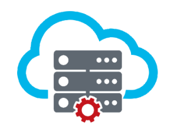
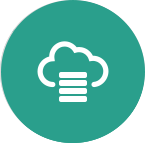
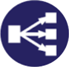

IaaS

IaaS offers web-based catalog for authorized users to provision and manage Virtual Machines. The catalog is provided as part of the STS Portal UI, BMX Broker Service and also as RESTful APIs. Project teams can perform Life cycle operations on the VMs using the STS Portal UI and BMX console via a browser. They can also integrate the DevOps pipe line using the REST APIs.
DbaaS

Build a COSB (Cloud Oracle Service Broker) that will use a provider-agnostic DBaaS (Database as a Service)
To begin with COSB has to be supported on BMX (IBM Bluemix)
COSB will provide real-time service orchestration and protocol mediation capabilities with standard interfaces for end user applications/services
LbaaS

Build a CLBR (Cloud Load Balancing and Routing) that will service a LBaaS (Load Balancing as a Service)
CLBR will process load balancing service requests in real-time through standard interfaces for end user applications/services to minimize provisioning time of service requests from days to few minutes.